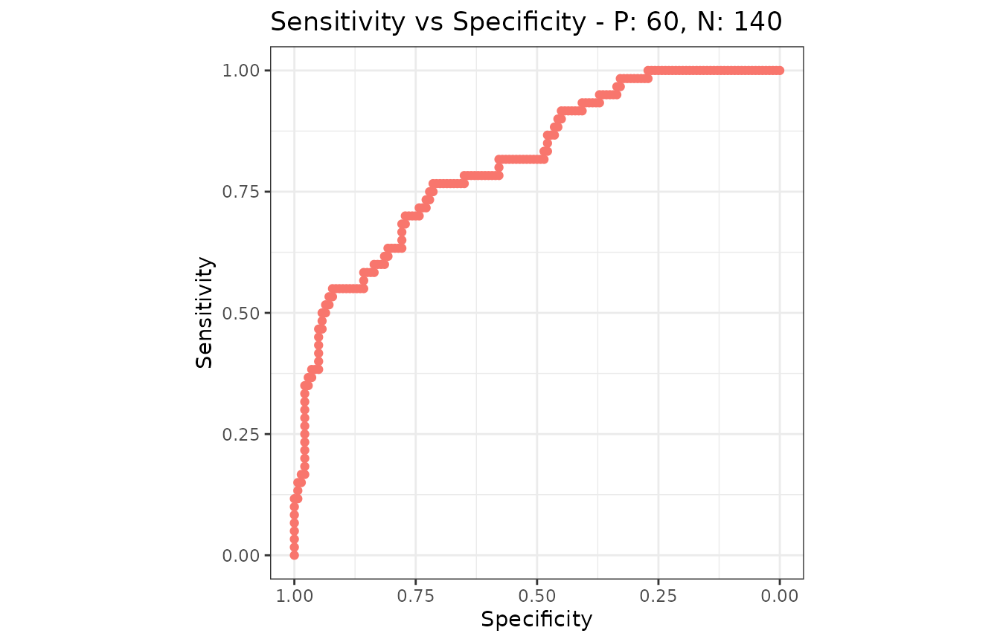

Coming from pROC or ROCR
Source:vignettes/articles/howto-from-proc-rocr.Rmd
howto-from-proc-rocr.RmdA translation table. If you already have working pROC or
ROCR code and want the same numbers out of
precrec, this page is the mapping. Comparison with other tools is the
argument about which to use; this one assumes you have decided.
Every equivalence below was checked against pROC 1.19.1
and ROCR 1.0.12. Neither is a dependency of
precrec, so their code is shown but not run when this page
is built - only the precrec chunks are.
library(precrec)
set.seed(7)
scores <- c(rnorm(60, 1.1), rnorm(140, 0))
labels <- rep(c(1, 0), c(60, 140))
mdat <- mmdata(scores, labels)One object instead of one per question
This is the difference that shapes everything else. pROC
builds a roc object and asks it questions;
ROCR builds a prediction and then a
performance object per metric pair. precrec
calculates the curves and the per-cutoff metrics once, and every
function reads that result.
# pROC: one object, one curve
r <- roc(labels, scores)
auc(r)
coords(r, "best")
# ROCR: a new performance object per question
p <- prediction(scores, labels)
performance(p, "tpr", "fpr")
performance(p, "prec", "rec")
performance(p, "auc")
curves <- evalmod(mdat)
auc(curves)
#> modnames dsids curvetypes aucs baselines
#> 1 m1 1 ROC 0.8102381 0.5
#> 2 m1 1 PRC 0.6897919 0.3One call, both curves, and the ROC and precision-recall areas
together. The practical consequence is that mdat and
curves are worth keeping in a variable: everything else on
this page reads one of them.
pROC
pROC |
precrec |
|
|---|---|---|
roc(labels, scores) |
evalmod(scores = , labels = ) |
ROC and PRC together |
auc(r) |
auc(curves), the ROC row |
Identical |
ci.auc(r) |
auc_ci(auc_delong(mdat)) |
Identical - the same DeLong variance |
ci.auc(r, method = "bootstrap") |
auc_ci(auc_boot(mdat)) |
Percentile, and stratified |
roc.test(r1, r2) |
auc_diff(auc_delong(mdat)) |
Identical statistic and p-value |
roc.test(r1, r2, method = "bootstrap") |
auc_diff(auc_boot(mdat)) |
Paired on the same resamples |
coords(r, "best") |
best_cutoff(mdat) |
Youden’s J, the default in both |
coords(r, "best", best.method = "closest.topleft") |
best_cutoff(mdat, metric = "topleft") |
|
coords(r, "all") |
metric_table(mdat) |
Same rows, many more columns |
coords(r, t, input = "threshold") |
classification_report(mdat, at = t) |
|
auc(r, partial.auc = c(1, 0.8), partial.auc.focus = "sp") |
pauc(part(curves, xlim = c(0, 0.2))) |
Identical, in the paucs column |
partial.auc.correct = TRUE |
The spaucs column |
Both standardize; not the same way - see below |
plot(r) |
autoplot(curves, "ROC") |
See the axis note below |
multiclass.roc(labels, scores) |
evalmod() on more than two classes |
One-vs-rest |
levels =, direction =
|
posclass = |
roc.test() is worth spelling out, because it is the
reason many people have pROC loaded at all:
roc.test(roc(labels, a), roc(labels, b)) # DeLong, paired
two <- mmdata(
list(scores, scores * 0.6 + rnorm(200, 0, 0.9)),
list(labels, labels),
modnames = c("A", "B")
)
knitr::kable(auc_diff(auc_delong(two)), digits = 4)| curvetypes | modnames1 | modnames2 | diffs | lower_bound | upper_bound | z_values | p_values | n |
|---|---|---|---|---|---|---|---|---|
| ROC | A | B | 0.1662 | 0.0838 | 0.2486 | 3.9542 | 1e-04 | 200 |
z_values and p_values here are
roc.test()’s Z and p-value. They
are the same statistic computed the same way, and on this example they
agree to every digit either package prints.
ROCR
ROCR |
precrec |
|
|---|---|---|
prediction(scores, labels) |
mmdata(scores, labels) |
|
performance(p, "tpr", "fpr") |
evalmod(), the ROC curve |
|
performance(p, "prec", "rec") |
evalmod(), the PRC curve |
The numbers differ - see below |
performance(p, "auc") |
auc(curves), the ROC row |
Identical |
performance(p, "aucpr") |
average_precision(curves) |
The step estimator; auc() interpolates instead |
performance(p, "acc"), "err",
"mat", … |
metric_table(mdat) |
Identical, all at once |
performance(p, "prbe") |
prbe(curves) |
|
performance(p, "cost", cost.fp = , cost.fn = ) |
metric_table(mdat, metrics = "cost", cost_fp = , cost_fn = ) |
Identical |
performance(p, "fall"), "miss",
"rpp"
|
The same names, as aliases | |
perf@x.values, perf@y.values
|
as.data.frame(curves) |
|
p@cutoffs |
The score column of metric_table()
|
|
prediction(list, list),
plot(perf, avg = )
|
mmdata(dsids = ), then evalmod()
|
Averaged by default |
The one that replaces the most code is metric_table(),
because ROCR returns one metric per
performance() call and this returns all of them:
performance(p, "acc")@y.values[[1]]
performance(p, "mat")@y.values[[1]] # and once more per metric
tab <- metric_table(mdat)
head(tab[, c("rank", "score", "accuracy", "mcc", "precision", "sensitivity")])
#> rank score accuracy mcc precision sensitivity
#> 1 0 NA 0.700 NA 1 0.00000000
#> 2 1 3.816752 0.705 0.1082834 1 0.01666667
#> 3 2 3.387247 0.710 0.1535221 1 0.03333333
#> 4 3 3.381452 0.715 0.1885020 1 0.05000000
#> 5 4 3.289978 0.720 0.2182179 1 0.06666667
#> 6 5 2.996067 0.725 0.2445998 1 0.08333333The score column is p@cutoffs with one
difference: ROCR puts Inf first, for the
cutoff that calls nothing positive, and precrec puts
NA there because no instance sits at rank 0.
The metrics on that row are the same in both.
Four things that will look wrong at first
The precision-recall numbers do not match
They are not meant to. ROCR joins the raw
precision-recall points with straight lines; precrec
interpolates between achievable points, which is the reason the package
exists. On the data above:
areas <- auc(curves)
knitr::kable(
data.frame(
interpolated = areas$aucs[areas$curvetypes == "PRC"],
step = average_precision(curves)$aps,
ROCR_trapezoid = 0.6980509
),
digits = 5
)| interpolated | step | ROCR_trapezoid |
|---|---|---|
| 0.68979 | 0.6928 | 0.69805 |
The gap widens as the positives get rarer, and Comparison with other tools shows it
doing so. If you need the step estimator - scikit-learn’s
average precision, and what most papers report under that name - it is
average_precision(). What ROCR draws has no
counterpart here on purpose.
The ROC numbers, by contrast, agree exactly. If a ROC AUC has moved, it is not the interpolation.
Tied scores produce extra rows
pROC and ROCR have one row per distinct
score. precrec has one row per rank, so a run of tied
scores gets a row per instance in the run, and by default those rows
split the run’s positives and negatives evenly between them. That is
what the curves need, and it is not what a threshold does.
tied <- c(3, 3, 2, 2, 1, 1)
tied_labels <- c(1, 0, 1, 0, 1, 0)
held <- metric_table(
scores = tied, labels = tied_labels, basic_ties = "hold"
)
knitr::kable(held[, c("rank", "score", "sensitivity", "specificity")])| rank | score | sensitivity | specificity |
|---|---|---|---|
| 0 | NA | 0.0000000 | 1.0000000 |
| 1 | 3 | 0.3333333 | 0.6666667 |
| 2 | 3 | 0.3333333 | 0.6666667 |
| 3 | 2 | 0.6666667 | 0.3333333 |
| 4 | 2 | 0.6666667 | 0.3333333 |
| 5 | 1 | 1.0000000 | 0.0000000 |
| 6 | 1 | 1.0000000 | 0.0000000 |
basic_ties = "hold" gives every cutoff in a run the
counts of the whole run, which is the tie policy the other two packages
use: the seven rows above hold four distinct ones, and those four are
the four rows of coords(r, "all"). Pass it whenever the
scores are rounded, binned or voted - and pass it to
best_cutoff() too, so the threshold it picks is one a
threshold can produce.
The threshold is named differently
coords(r, "best") reports a midpoint between two
neighboring scores. best_cutoff() reports an observed
score, and the rule is score >= it.
knitr::kable(
best_cutoff(mdat)[, c("metric", "value", "rank", "score", "sensitivity")],
digits = 4
)| metric | value | rank | score | sensitivity |
|---|---|---|---|---|
| informedness | 0.481 | 86 | 0.6795 | 0.7667 |
The two name the same cutoff: every instance separates the same way,
and the sensitivity and specificity are identical. Only the number
written down as the threshold differs, and precrec uses a
value the data actually contains so that it can be applied without a
rounding decision.
The standardized partial AUC is standardized differently
Both packages report a partial AUC and a standardized version of it, and the two standardized numbers answer different questions.
precrec divides the partial area by the area of the box
the region occupies, so spaucs is the fraction of what was
available that the curve covered. pROC, with
partial.auc.correct = TRUE, applies what the literature
calls the McClish correction, which rescales the interval between chance
and perfect onto 0.5 to 1 - so a corrected
partial AUC reads on the same scale as a full one.
The difference is where chance sits. Over false positive rates up to
0.2, a coin flip covers an area of 0.02: that
is 0.1 of the box, and 0.5 after the
correction.
region <- 0.2 # false positive rates 0 to 0.2
areas <- pauc(part(curves, xlim = c(0, region)))
roc_row <- areas[areas$curvetypes == "ROC", ]
chance <- region^2 / 2
knitr::kable(
data.frame(
paucs = roc_row$paucs,
spaucs = roc_row$spaucs,
corrected = 0.5 * (1 + (roc_row$paucs - chance) / (region - chance))
),
digits = 5
)| paucs | spaucs | corrected |
|---|---|---|
| 0.09774 | 0.48869 | 0.71594 |
paucs is the number pROC gives uncorrected,
to the last digit. The last column is the conversion, and it is the
number partial.auc.correct = TRUE returns - so a corrected
value can be had here without pROC installed. The formula
holds for a ROC region measured from a false positive rate of
0; a region that starts elsewhere needs the area under the
diagonal across it in place of region^2 / 2.
Neither is the right one. spaucs is the more direct
reading of “how much of this corner did the curve fill”; the corrected
one is the more comparable to a full AUC. Say which you used.
The axes
plot(roc) puts specificity on the x axis and reverses
it, so the curve runs from the bottom right. autoplot()
puts 1 - specificity on it, increasing left to right, which
is the orientation the precision-recall plot beside it uses.
Same curve, same area, different tick labels - and if the other one
is what your readers expect, metric_curve() will draw
it:
library(ggplot2)
sn_sp <- metric_curve(
scores = scores, labels = labels,
x_metric = "specificity", y_metric = "sensitivity"
)
autoplot(sn_sp) + scale_x_reverse()
What has no equivalent
Honestly, and in the order they are missed:
-
Curve smoothing.
smooth(roc)has no counterpart, deliberately: a smoothed curve is a model of the data rather than a summary of it. -
Venkatraman’s test, and tests at a fixed
sensitivity or specificity.
auc_diff()compares areas. -
Unpaired comparison. Both
auc_boot()andauc_delong()require the models to be scored on the same instances. -
Confidence bands from one test set.
ci.se()andci.sp()have no counterpart; confidence bands here come from several test sets, andauc_boot()covers the single-sample case for the area rather than for the curve. -
Sample size calculation.
power.roc.test()has no counterpart. -
ROCR’s convex hull, expected-cost curve and calibration error ("rch","ecost","cal"), each a curve in a space of its own rather than a column of the metric table. -
Coloring a curve by its cutoff.
plot(perf, colorize = TRUE)has no direct counterpart; one metric against another is the nearest thing.
Next
- Comparison with other tools - which to use, and where the numbers differ
-
Get the numbers out -
metric_table()and the long form -
Choose an operating point -
what
coords(x, "best")becomes here - Balanced and imbalanced data - why the cutpoint criterion matters more than it looks